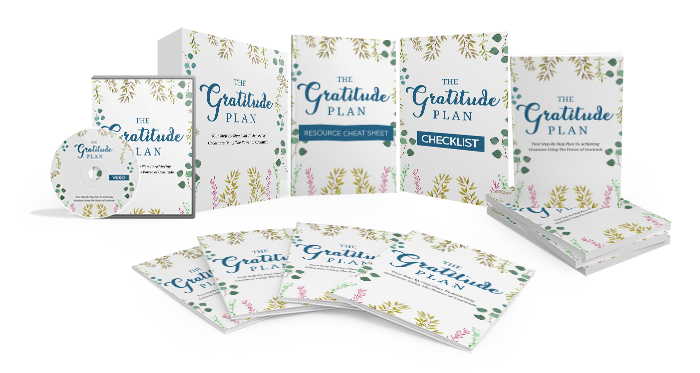

"Finally! Discover the Secrets to Achieving Greatness by Using the Power of Gratitude"
Follow This Easy Step-By-Step Plan to Achieve Greatness in All Aspects of Your Life by Harnessing the Power of Gratitude!
From: [GRATITUDE FULFILLMENT]
In today’s highly consumerist society, where materialism has overtaken our lives and our family, and where quarterly growth figures have become a measure of a nation’s standing, it can be difficult to see past the idea that material possessions will make us happy.
While the material things that you collect will provide you with momentary happiness, this false sense of happiness can quickly fade, leaving you feeling empty and unfulfilled.
Living with gratitude is one of the major keys to living a happy and prosperous life.
Gratitude is one of the greatest virtues you can possess in your life and something that you can easily learn.
Having a lack of gratitude in your life can make it more challenging to make it through difficult situations and has left you feeling a void in your life that you can’t seem to fill.
Are You Lacking Gratitude In Your Life?
Here are just some of the signs that you may be lacking gratitude in your life and may need a change.
- You find that your mind continues to drift off to better ways of being.
- You constantly romanticize the past in order to escape the present.
- You actions fail to align with your words.
- You have a sense that you are settling in your life.
- You feel disenchanted with the life you are leading.
- You feel like your relationships are superficial and lack real connection.
- You constantly dream about how your future will be.
- You continue to buy things to fill a void in your life, but never feel fulfilled.
- You see someone with a great life and want what they have.
How Can You Live a Life of Greatness Through Gratitude?
If any of these statements resonate with you, then it is time for you to take action and learn how you can develop gratitude to live a happier and healthier life.
The key to finding happiness and achieving greatness in all areas of your life is to cultivate an attitude of gratitude.
With determination and a little bit of effort you can learn how to develop a sense of gratitude and become content with yourself and your life.
Fortunately, I’ve complied a comprehensive guide that will show you the steps you need to take to cultivate genuine gratitude so you can finally achieve the greatness in your life that you desire and find true happiness and well-being.
Introducing
THE GRATITUDE PLAN
Your Step-By-Step Plan To Achieving Greatness Using The Power of Gratitude

Here's exactly what you'll get inside the course:
Ebook
Here's what you'll discover inside this guide:
- Learn that gratitude is a state of being.
- Learn how to use gratitude in your relationships to develop a deeper connection.
- Learn how the power of positive emotions and gratitude can change your life.
- Discover how practicing mindfulness and meditation can cultivate an attitude of gratitude.
- Discover what unbalanced gratitude is and how you can counteract it.
- Learn how gratitude can empower you to better understand how it can help you become more generous and compassionate.
- Find out how you can learn gratitude and incorporate it into your daily life.
- Learn how to develop gratitude habits.
- Find out how to start to cultivate gratitude into your life.
When you download this course and uncover how to cultivate an attitude of gratitude, you’ll benefit by finding genuine happiness and increasing your overall well-being.
Here are just some of the powerful benefits you’ll gain:
- You’ll come to understand that gratitude is a state of being that can be learned.
- You’ll learn simple ways to communicate gratitude to strengthen the connections in your relationship.
- You’ll discover the many benefits you can gain by developing an attitude of gratitude.
- You’ll learn how mindfulness can help you uncover gratitude in your life.
- You’ll learn how to use meditation to cultivate gratitude in your day-to-day life.
- You’ll discover how gratitude can make you more optimistic, more thankful, and more energized.
- You’ll learn how gratitude can help you find more meaning in your life and how it can help you become more sociable.
- You’ll discover the common behaviors that grateful people possess and how you can incorporate them into your own life.
- You’ll find out how you can cultivate gratitude in your life.
- And so much more!
SPECIAL BONUSES FOR TAKING ACTION!
FAST-ACTION BONUS #1:
Point-By-Point Checklist
View or print this handy checklist so that you can check off each point.
It is like a summary of the entire guide but in actionable, bite-sized points so that you can successfully get through the course.
FAST-ACTION BONUS #2:
Resource Cheat Sheet
You'll also get access to a rolodex of top sites, blogs, forums, tools, apps and services to get you even further.
Inside you'll find:
- Top blogs and forums
- Top tools
- Top tips and how to's
- + more!
FAST-ACTION BONUS #3:
Mindmap

A quick glance over this mindmap and you'll get an instant refresher of all the major points and action steps from the main guide.
Does that sound good or what?
How Much Is All This Going To Cost You?
You can own The Gratitude Plan together with all the bonuses for a mere $7.00 .
That is a truly incredible deal!
Did I mention this eBook is only $7.00? It's definitely a point worth repeating. You will be hard-pressed to find a more valuable resource.
I'm delighted to have the chance to share this powerful guide with you.
Again, you will receive the comprehensive and valuable insights for only $7.00 .
Please click the Add To Cart button right now and take ownership of this valuable eBook TODAY!
Get Instant Access Right Now!
Yes! I want instant access to The Gratitude Plan which includes the following:
- The main eBook
- FAST-ACTION BONUS #1: Checklist
- FAST-ACTION BONUS #2: Resource Cheat Sheet
- FAST-ACTION BONUS #3: Mindmap
Regular Price: $27.00
Today Only: $7.00!
To Your Success,
[]
P.S. - A recent study determined that half of your happiness levels are based in genetics, 10 percent is based on your circumstances, and the other 40 percent is based on our behavior. This means that we have a significant say in how happy we are in our lives.
P.P.S. - If you chose to bypass this offer, you will never learn how to achieve greatness by cultivating an attitude of gratitude. Make the investment in yourself and download this valuable resource today.
If you achieve greatness, then you need to get this complete guide to harnessing the power of gratitude. Don’t wait, click here to get “The Gratitude Plan" today.